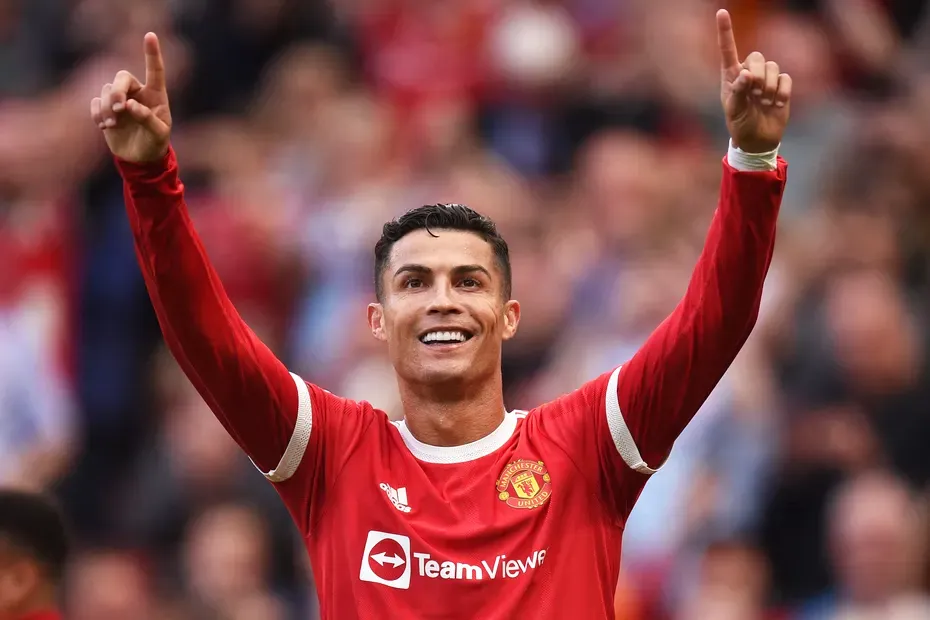

Manchester United
Jestem fanem Manchesteru United kibicuje im od wielu lat, dlatego właśnie postanowiłem że stworzę stronę o takim właśnie temacie.
Gdy obejrzałem ich pierwszy mecz to odrazu wiedziałem że "to jest ten klub" i tak zaczęło się kibicowanie.
Glory Glory Man United!!!